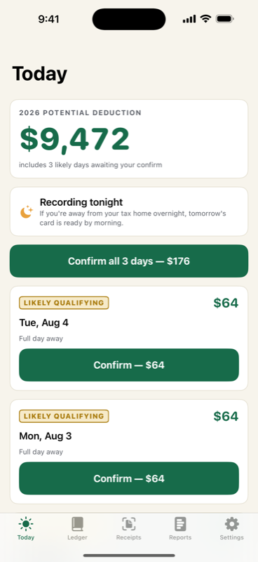
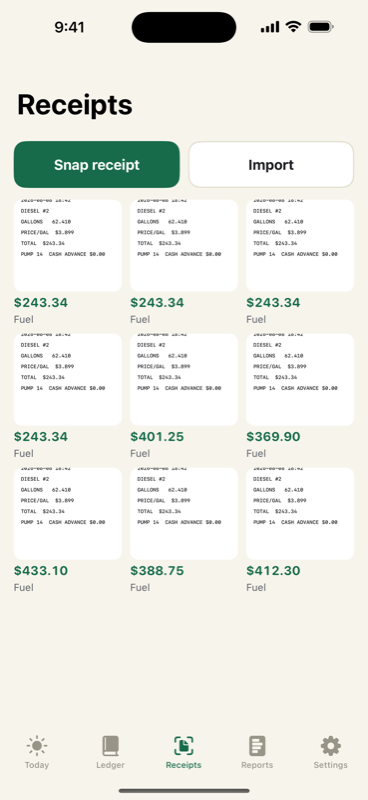
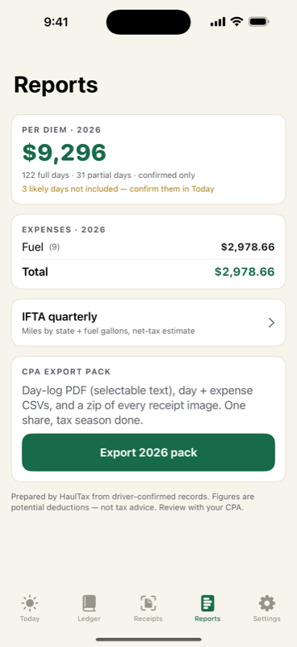

For 1099 owner-operators
IFTA Tracker notices when you're away from your tax home overnight and writes the day into your ledger — date, place, and business purpose. You confirm it with one tap in the morning. Nothing to type while you drive.
It's 2 a.m. in a truck stop parking lot somewhere outside Amarillo. You've been out eleven days. Nobody handed you a form that says "tonight counts." But it does — the IRS lets transportation workers claim a per-diem deduction for every night away from their tax home. At today's rate that's $80/day, 80% deductible — $64 a night in potential deductions.
Here's what actually happens to that money:
The shoebox drivers hand their CPA a bag of faded receipts in March. The CPA guesses. The guess is conservative, because guesses have to be.
The spreadsheet drivers quit updating it in February. A spreadsheet doesn't know where you slept — and when an audit asks for time, place, and business purpose per day, "I was driving that year" isn't a row.
The "my ELD has it" drivers get the worst surprise: your ELD provider only has to keep logs about 6 months. Audits come 2–3 years later. Your records have to outlive your ELD's — and they don't.
The money doesn't disappear because the deduction isn't real. It disappears because the record isn't.
Say you run OTR and you're out 15 nights a month. The per-diem math is dead simple:
| 15 nights × $64 | $960 / month |
| × 12 months | $11,520 / year |
| One forgotten week | −$320 to −$448 |
Potential deductions at the current transportation-worker rate — your actual tax savings depend on your bracket and situation. That's between you and your CPA. Our job is making sure the record exists.
A year of IFTA Tracker costs less than two forgotten nights.
No start button. No trip logging. No typing at 70 mph. It's passive by architecture — built to comply with distracted-driving rules by never needing your hands in the first place.
IFTA Tracker checks where your phone dwells overnight against your tax home — using the battery-friendly location APIs, never a GPS trail. Away overnight? The day drafts itself: date, place, business purpose, rate.
Next morning there's a card waiting: "Tue, Aug 4 — Full day away — Confirm $64." One tap. The app never confirms a day for you. Your ledger, your word — that's exactly what makes it defensible.
The headline number is always the sum of your confirmed days. Every edit is logged, never overwritten. When your CPA asks how you got it, the answer is: here's every day, tap any one of them.



Full days, partial departure/return days, US and Canada rates — computed correctly, automatically, with the rate table that changes every October kept current for you.
Snap it at the pump. Total, gallons, and state read automatically — no signal required. Share settlement PDFs straight into IFTA Tracker from Mail. Every receipt filed under its Schedule C category.
Miles by state plus fuel gallons pulled from your own receipts, current all quarter. Export the CSV when filing time comes.
One export: a day-log PDF your CPA can actually read, day and expense CSVs that open clean in Excel, and a zip of every receipt image. Clean records in, smaller bill out.
No account. No login. No server. Your records live on your iPhone. We couldn't read your data if we wanted to, because we never receive it.
$99.99/year
That's $8.33 a month — or $14.99 month-to-month if you'd rather not commit.
7-day free trial on the annual plan. We remind you on day 5 before anything is charged. Cancel in 10 seconds from inside the app — and if you ever leave, your records export forever anyway. We don't hold ledgers hostage.
Honestly? Probably not. The employee per-diem deduction ended in 2018. IFTA Tracker is built for 1099 owner-operators — own authority, leased, or lease-purchase. If you're W-2, save your money. We'd rather tell you that now than in a review.
Local drivers usually have no overnight per diem — but receipts and IFTA still count, so it can still earn its keep. The overnight ledger is the star of the show, though, and we won't pretend otherwise.
No. IFTA Tracker never runs continuous GPS. It uses the same low-power location events your phone already produces (significant location changes, visits, one geofence around your tax home). It's the difference between a dashcam and a doorbell camera.
Nowhere. There's no IFTA Tracker server and no account. Records stay on your iPhone. Read the privacy policy — it's short, because there's almost nothing to disclose.
No and no. IFTA Tracker records potential deductions and produces the time-place-purpose documentation the IRS expects. What you claim is a decision for you and your tax professional. We build the record; your CPA makes the call.
Phone died? Airplane mode? IFTA Tracker never invents a day — it asks. You get a "were you away Thursday night?" card and a one-tap answer. Gaps become questions, never fiction.
IFTA Tracker provides recordkeeping tools, not tax, legal, or accounting advice. Figures shown are potential deductions at published transportation-worker per-diem rates; consult your tax professional about your situation.